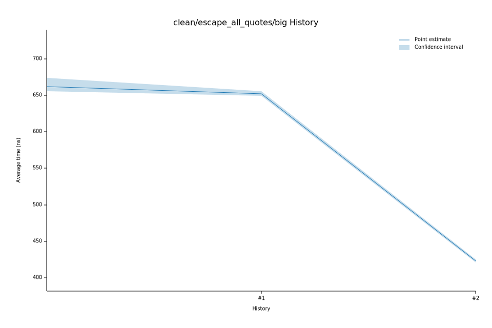

# 42023-01-13T17:02:37-08:00
|
Lower Bound |
Estimate |
Upper Bound |
| Value: |
444.87ns |
447.50ns |
450.07ns |
| Throughput: |
662.41MiB/s |
658.51MiB/s |
654.75MiB/s |
| Change in Value: |
-5.5060% |
-4.5535% |
-3.6897% |
| Change in Throughput: |
+5.8269% |
+4.7707% |
+3.8310% |
No change in performance detected.
# 32023-01-13T16:59:13-08:00
|
Lower Bound |
Estimate |
Upper Bound |
| Value: |
465.50ns |
468.01ns |
470.60ns |
| Throughput: |
633.05MiB/s |
629.65MiB/s |
626.19MiB/s |
| Change in Value: |
+9.6148% |
+10.716% |
+11.909% |
| Change in Throughput: |
-8.7715% |
-9.6787% |
-10.642% |
No change in performance detected.
# 22023-01-13T16:57:14-08:00
|
Lower Bound |
Estimate |
Upper Bound |
| Value: |
421.00ns |
422.85ns |
425.08ns |
| Throughput: |
699.96MiB/s |
696.90MiB/s |
693.25MiB/s |
| Change in Value: |
-35.362% |
-34.599% |
-33.850% |
| Change in Throughput: |
+54.708% |
+52.903% |
+51.170% |
No change in performance detected.
# 12023-01-13T16:55:13-08:00
|
Lower Bound |
Estimate |
Upper Bound |
| Value: |
649.20ns |
652.35ns |
655.69ns |
| Throughput: |
453.92MiB/s |
451.73MiB/s |
449.43MiB/s |
| Change in Value: |
-3.7110% |
-2.4043% |
-1.1337% |
| Change in Throughput: |
+3.8540% |
+2.4635% |
+1.1467% |
No change in performance detected.
# 02023-01-13T16:53:19-08:00
|
Lower Bound |
Estimate |
Upper Bound |
| Value: |
655.45ns |
661.91ns |
673.78ns |
| Throughput: |
449.59MiB/s |
445.20MiB/s |
437.36MiB/s |